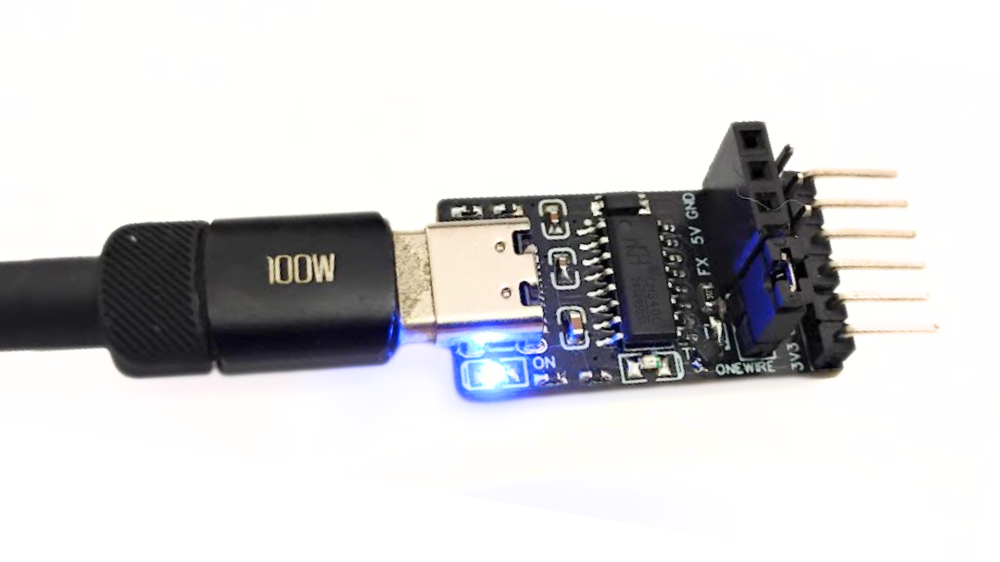
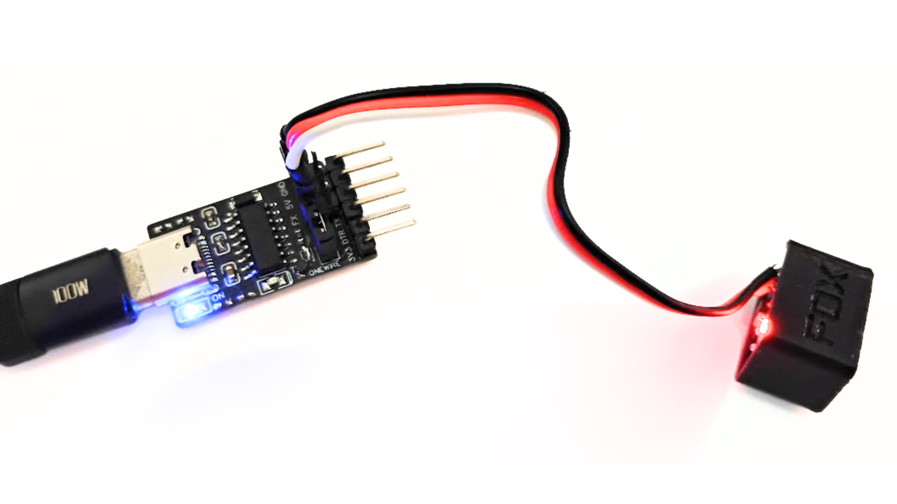
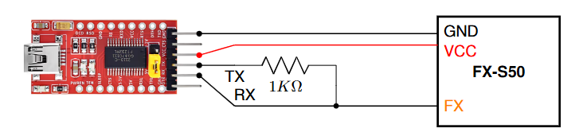
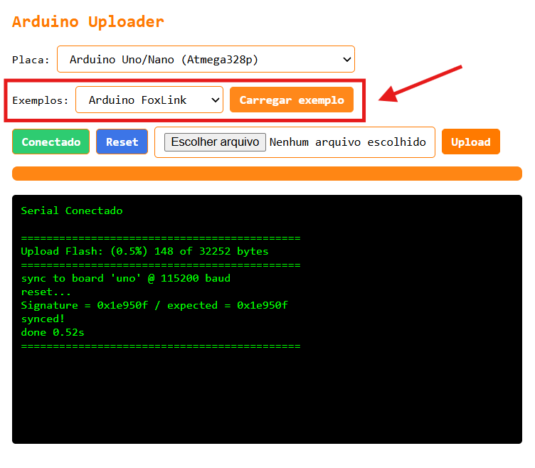
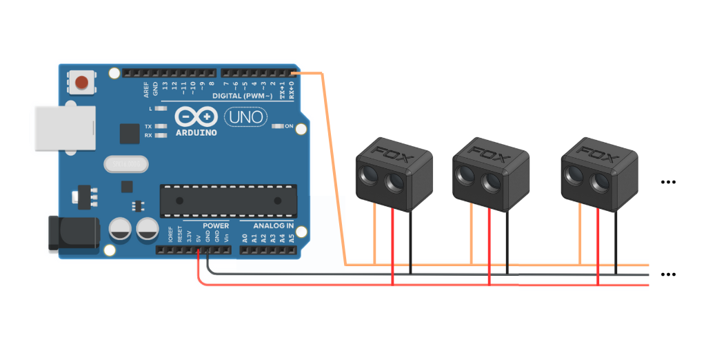

FoxLink
Um FoxLink é a placa que possibilita a comunicação entre o computador e os dispositivos da Fox. É recomendado usar o FoxLink oficial mas também é possovel montar. A seguir as alternativas.
[Opção 1] FoxLink oficial (recomendado) ⭐️
A Fox fornece um FoxLink oficial multiprotocolo. Ele é 4 em 1, funciona com dispositivos Fox (FoxWire/FoxShell), ESCs BLHeli e AM32 e também pode ser usando como conversor USB serial. O uso é simples, basta conectar o dispositivo nos primeiros 3 pinos (conforme a imagem). Obs: no modo foxlink, am32 e BlHeli o jumper precisa estar conectado.


[Opção 2] FoxLink usando um conversor USB Serial
Conecte o TX da placa com o RX usando um resistor de 1Kohm. O pino RX será o pino de comunicação (Pino FX) que deverá ser conectado aos sensores.

[Opção 3] FoxLink usando Arduino Nano ou UNO
Outra opção é usar um Arduino Nano ou UNO como interface entre o computador e os dispositivos Fox. No entanto, a comunicação não é tão estavel como usando um conversor USB Serial ou FoxLink oficial. Por isso, se for usar, teste mais de uma vez se as configurações de fato foram salvas.
Código FoxLink bitwise ASM
Abra o Arduino IDE ou o Arduino uploader, faça upload do código abaixo, em seguida conecte o pino de sinal do sensor, "FX", ao pino 0 também conhecido como "RX".
✅ A versão atual melhorou significativamente o desempenho.
// Fox Dynamics Team
// FoxLink bitwise ASM V0.2
#include <avr/io.h>
int main() {
DDRD = (1 << PD1);
PORTD = (1 << PD0);
while (1) {
asm volatile (
"in r0, %[pin]" "\n\t"
"bst r0, 0" "\n\t"
"bld r0, 1" "\n\t"
"out %[port], r0" "\n\t"
:
: [pin] "I" (_SFR_IO_ADDR(PIND)),
[port] "I" (_SFR_IO_ADDR(PORTD))
: "r0"
);
}
}
Alternativa para fazer upload online sem o Arduino IDE
A Fox disponibiliza uma ferramenta de upload de binarios ja compilados para Arduino o Arduino uploader. Para carregar o código do Arduino Foxlink acesse o Arduino uploader, escolha e conecte a placa, depois selecione o exemplo Arduino Foxlink e clique em Carregar exemplo. O codigo será instalado e a placa ja estará pronta para uso com o FoxLink webtool

